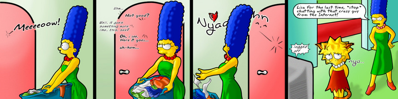
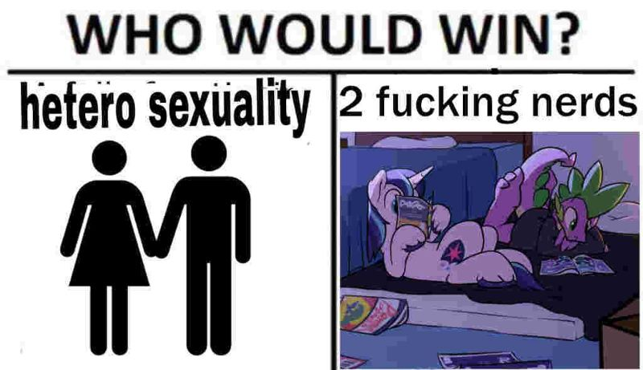

Hangover Archives: 2020–01
Oh Fuck
I’m here. I survived the past decade. I did it!
I wrote 9,000 words in four days. Isn’t that lovely of me? I then published it as an article. It’s about games, and, uh, what I thought about them. Kinda like reviews, if you can fit meaningful discourse in a single paragraph. That article is here: “The 2019 Frogesay Arbitrary Game Awards!”. Ooh, yes, isn’t that very arbitrary? How sinister of me to be so non-conforming in this way. Although it also has games from 2018 ― look, just read the article and give me one more notch on the view counter. Unless you don’t want to, which is treason, but what-EVER.
So, first Hangover of the 2020, and I’m writing this while actually hungover, so it’s about damn time. A bunch of people more serious than I am have written some insightful commentary about the state of human existence and how you can relate the self to the world and become a better human being through that, but I’m not going to link any of that, because fuck you. This is also the first “fuck you” of 2020. Hell, it had to be somewhere, right? Better get it out of the way early so I don’t feel guilty by calling one of you people degenerate mingebag cunts who are no better than the billions of sperm you killed off on the way to fertilise your mother’s egg and give birth to someone as worthless as you are. Yeah, we’re salty this year. Who gonna stop me? Huh? Who gonna stop me, huh? Kanye West reference. He’s mentally ill now.
What do I wanna say to usher in the new year and give you that silver bullet that will make you become the New Year New You that you predictably espouse? Uhhh, don’t do drugs kids, see you later, buh-byeeeee. And also stay in school, or don’t, because it’s kind of stupid, no I will not provide evidence for that statement. What I will say is my standard spiel of think for yourself, don’t consume crap, make things that make people better people, appreciate art, and understand that knowledge is the only way you’re going to get out of your mediocre fucking existence, so if you don’t agree with that, fuck you. So learn, bitch. Read a book or something. Fuck a librarian. Cum buckets of didactic thought. And, I don’t know, clean up your porn collection. Those anime girls can’t all be your Top 10 Sonic Girls.
Would you enjoy some pithy quote which reveals my philosophy on human existence and how I relate to it? Yeah, I bet you would. So, uh, just remember that the mass of men are filled with desperation, think about all the people dumber than the average man, and understand that everyone are essentially bundles of prejudice and bias with thought processes that only serve to reinforce their own fundamentally unsound worldview. Your escape from this hellhole is empiricism and rational thought. Know shit, know why you know shit, and you will be happier for it. Or maybe you’ll be a neurotic asshole like I am, unable to be happy with life because you can’t appreciate the simple tenants of living without questioning why you enjoy what you enjoy. You either live a blissful ignorance where you never have to be challenged on anything, or you understand the world as it is and hate it all because it’s a vile shithole which hosts the most evil creatures to ever walk the planet.
Fuck it, that’s the most honest tract you’re getting out of me tonight. Enjoy 2020. If you don’t enjoy 2020, then you’re fucked. Maybe we’re all fucked…
Fuck.
I Immediately Regret my Decision
Two days ago I finished my whirlwind adventure in games criticism and made everybody agree with me forever. Except I didn’t, because you can’t adequately explain in a single paragraph why one of the most beloved franchises of all time is poopy, unless we already know it’s poopy and have to presuppose its poopiness from external sources. Now it’s back to work for me and Frogesay. What is there to work on? Well, as evidenced by my earlier article on projects I abandoned… not those things. So now I have to make new things to abandon. C’est la vie, which is French for “that is the life”, which is a language I don’t speak and is becoming obsolete. Bars.
My goal for Frogesay from here to eternity is to dig up all the cringey, crappy, no-good garbage articles I wrote in the distant past and bring them to light so that we can all point at them and laugh. And then I’ll cry, because I will be laughing at myself, and I can’t take criticism! That’s why I became a games critic ― to dish it out, but not to receive. I hope that through this effort I can clear up my hard drive and stop caring about all the nonsense projects, nonstarter article series, and nbadlywritten poetry that I wrote that I’m never, ever getting published, so I might as well show you here. Because this is what I’ve devolved into on this here Frogesay. Fucking poetry.
Well, it’ll be a good experience for both of us, all two people who read this blog. I get to understand where I am now by virtue of understanding where I was in the past, you get to look at some things that I made that are just no good and haven’t ever surfaced before (as opposed to being online for over three years), and we all get to ride into the sunset like the homosexual cowboys we are. Because the Old Town Road was, in reality, the Old Gay Road, but Lil Nas X was censored by the Establishment for being a queer. Rest in peace, sad cowboy emoji.
I don’t know where that came from. Nobody in three years is going to get what I’m talking about. Remember Big Shaq? The man’s not hot, ting, scra-scra-scra? Yeah, that was an auditory experience that captured the hearts and minds of Millennials for a few months. But look at them peng girls 😳 man’s just not hot 😤 . I really hope we get more schlock novelty songs like what Big Nas and Little Shaq X offered. Even a new Macklemore would be nice, ever since old Macklemore went from the Whitest dude in the industry to ripping off mumble rap from some dignified and erudite gentleman who wrote a song about broccoli (which was about da mary jane… hehehe, they’ll never figure dat out) and has since stopped rapping about vegetables. Although there is a band starring vegetables that sings cover versions of JoJokes. Bruh. Now this is a Reddit Moment.
Alright, I’ve desensitised you to stupid jokes and irrelevant tracts about inane bullshit that doesn’t matter. Now expect more of that… in the future, that is. I don’t have any now. What, do you think I’m some sort of writer? That I can just write things and then upload them online, as if I had access to the Internet and a free hosting platform to put arbitrary text content on? And maybe I’ll just bring out my dog made of bees, that when they bark they shoot dogs out of their mouths. And those dogs? They’re made of bees.
No, they’re not called “LEGOs”
Remember when we were kids and we were pure and innocent instead of hitting the vape and listening to music that isn’t the music our parents listened to and is therefore evil? Remember the days before we were disenchanted teenagers who jerked off into our pyjamas during IT class with the full nut and that’s a memory you’re going to feel smug about the rest of your life because you did something that would ruin your social life forever and you got away with it? Remember that time you cut off your legs below the knee to look good in front of your friends because the Exhaust Pipe Challenge had long since ceased to amuse and everyone knows that crazy uncle who has a variety of sharp objects in his nondescript shed in the woods that the police regularly drive by and the pain of dismemberment is nothing compared to the glory of getting thirty likes on Instagram, and you know, some girls like crippled men. It makes them feel good about themselves. Makes them vulnerable, less likely to run. Less likely to call the authorities when they do intimate things with that tiny, scabby, stump.
Anyway, let’s talk about LEGO speedruns.
First of all, just look at this. Can you even describe what’s happening here? Han Solo (and his twin brother, San Holo) go sicko mode on an entire village to collect beautiful prismatic studs. And by “sicko mode”, I mean commit domestic terrorism. And those studs are currency in the world of LEGO. So Han Solo is a blood knight who mercilessly destroys the residency and populace of an undefended autonomous territory for the sake of gaining wealth off their literal blood and bones. Look, I never watched Star Wars. All I remember from The Force Awakens (more like… the FARCE awakens! hah!) is some dude who has a hard-on for loyalty and a Wookiepedia article, because this is what the human race spends its time on inbetween curing venereal diseases.
You think that’s nostalgia? That’s Walmart nostalgia, the type you pick up next to the chocolate bars and USB chargers that will turn your apartment complex live when you plug it in to charge up your phone to look at Lego Studios Backlot any% in 5:40. Man, I remember playing this game when I was barely a fetus ― and it turns out fetuseses aren’t terribly discerning customers. This footage is pretty cursed, though. Why does the music cut out within ten seconds? Why do you get a pistol in your inventory? Why do you talk to the Invisible Man as a plot point? Why is there a discussion about a cat voring mosquitos and is therefore “epic”? And why are The Backlots as large and sparsely populated as The Backrooms? Can we get a Backlot creepypasta where the Backlot is a magic IKEA or whatever silly SCP article that gets inexplicably popular among the normies? There’s an article about a pill that kills people by turning them into fifty million bananas, and you people focus on the IKEA. Okay.
And everyone with a soul knows about the normie LEGO games. Things like LEGO Star Wars, LEGO Island, and LEGO Prostitution Laws in Canada. But how many of you know the real vintage LEGO game: Junkbot? Which is totally irrelevant because it has no speedruns, so let’s talk about LEGO Island 2 ― the one on the GBA, which stars a dude who looks like a tomboy with a fetish for wet pizza sex. Apparently there’s a LEGOthon charity stream in the vein of Games Done Quick, which is nice and all, but what would compel a man to speedrun mediocre shovelware on a dead handheld whose sole purpose is playing WarioWare? And fuck me, this video has 16 views! Look at that production value! St. Jude’s can St. Go Fuck Itself, since nobody is there to donate for the saving and-or researching of the dying children therein.
Kids, this only goes to show that no matter how hard you work on something, nobody will care and you will be admitted to intensive care in an underfunded hospital where your skin will melt and your bones will turn brittle and you will die alone and unloved in an unmarked grave in a pineapple under the sea.
YTP: Floge Is (Not) Saying
2020 is finally upon us, which means we now have to suffer several weeks of hack writers comparing arbitrary things to an arbitrary year that arbitrarily defines our arbitrary existence on this arbitrarily lucky-to-support-life planet. Since I am the arbiter of arbitration, I exempt myself from this hackery. I am, after all, The Greatest Writer To Have Ever Lived (registered trademark incoming). Let me compare things to 2020, let me make jokes about us being in the future, let’s talk about society looking nothing like Blade Runner, and let’s talk about YouTube Poop, which is technically a form of art even if it’s what you art critics would call “low art”. I am also The Greatest Art Critic To Ever Live, so I have authority in these manners.
Since it’s the future Blade Runner times of 2020, the Twitter account “NocontextYTP” posted a thread asking: “favorite ytp of the decade, go”. And there are a lot of good Poop suggestions here. Hank of the Hill. The Misadventures of Skooks. The Fesh Pince of Blair. And the perennial favourite, “Spencer Launches A Bagel into Griffin’s Rectum” (now in HD!). There’s even a new contender, with one of the most discussed, analysed, remixed, and collaborated-with Poops of 2019: “ytp sexer”. It’s a good thing that this thread was written in December and not January, or else I’d have to wait a whole decade to see the results!
Froge Note: The author is unable to continue the rest of this hangover due to dying of laughter at this hilarious and original joke. The rest of this Hangover will be ghostwritten by his brother, Floge.
One of Froge’s ― I mean, one of my favourite things about YouTube Poop is how incestuous the culture is, and it’s that appreciation for incest which made me have a strained relationship with Froge, I mean me. Documenting the history of Poop and the microcosmic subcultures within allow you to understand the traditions, influences, and styles of comedy the poopers come from, and the various gags used throughout Poop are extremely poorly documented on the YouTube Poop Wiki, which is a time capsule of every dumb and overused joke from 2009, just like Poop itself. You got your sentence-mixing, your earrape, your SoS, your JoJ, your WoW, your CoC, your wacky effects, your character-does-something-then-does-the-same-thing-in-reverse-but-the-video-is-flipped-so-it-looks-like-one-continuous-action-yes-this-is-funny joke, and once in a while you even get a good Poop!
In consideration of the wide variety of traditions and tastes in YouTube Poop which create fragmentary audiences on a fractal scale, I can’t tell you what the best Poop is. And I can’t tell you what my favourite Poop is, either, because there’s so much to enjoy in what different poopers provide that I can laugh at all of them (experiments in dramatic YouTube Poop have proven to be deeply unsettling). But the one I appreciate the most is Will Wonk and the Chalk Factory. It’s an affectionate parody of one of my favourite movies that has a steady tempo, coherent editing, and an absence of the nonstop, over-the-top gags that are typical of modern Poop. There’s no gimmicks, no swearing, no cheap jokes, and nothing that denigrates the original source material. It’s just a good, comfy, funny Poop to watch, and it features one of the most hard-hitting quotes to ever be featured in cinematic media: “If you want to view paradise, simply die. There’s nothing”.
Oh, and Froge isn’t dead ― it was me the whole time! Yeah, thought you’d get away from adding that titbit on the Frogelore Wiki? Sorry to to ruin the Floge article you threw in the sandbox, but the story must go on, even if it makes no logical sense and damages the tightly-woven and coherent backstory of this completely fictional online endeavour. Also I haven’t sworn during this Hangover, except for Rectum, so fuck fuck fuck fuck fuck fuck fuck fuck fuck. Alright, that’ll ward off the kiddies. Yes, I know I called you “kids” in the last Hangover. No, I’m not paying your damn child support.
Disingenuous and Incompetent Filler
Oh, no. It’s Hangover time. I already have three of those in the works, and due to my hectic schedule of doing fuck all and jack shit, I couldn’t finish any of them. It’s around this time that I send you funny YouTube videos or link to someone who’s doing a better job than me at this whole “writing” thing, since people stick around to read their work instead of direct-messaging me screenshots of my opinion on Genital Jousting while calling me Penis Boy. This is what I get for writing all those long Hangovers in December. One thousand-word segment, that’s a novelty. Two of them, that’s special. But then I do three of them? Now you expect it.
Well, enough high-quality writing from me! Enough lengthy opinions on things I care about! We are now entering a new era of Froge, where work is unfinished, my ideas are basic, and nothing I say has any gravitas! I would explain what gravitas is, but why would I? I don’t write. I just breath slightly on the screen and the words come forth out of pixels slowly fading in my breath. Truth be told, this talent is starting to worry me. I’ve been noticing a greater incidence of tall White men in beige trenchcoats and fedoras, and the same nondescript sedan passes by my apartment complex at 18:00 UTC each day. Nobody ever told me I was special. Well, they did, but they meant I was autistic. Which I am. Take that, neurotypicals ― oh, I’m sad because I’m disabled.
I’m instituting this “no good work” policy right now. My reasons for this are as follows:
Top 5 EPIC Pranks That Went Too Far!
Remember in 2016 when obviously-staged prank videos would rack up tens of millions of views on YouTube because the Internet is filled with people who have to share the same brain cell which is used to maintain a referendum-based direct democracy of whose turn it is to get the brain cell instead of thinking about whether or not what they’re watching is of any value to their lives whatsoever? Yeah, don’t expect to see Sam “Pinch My” Pepper in the 2010s nostalgia collections published by those channels with greyscale thumbnails and no visible usernames, which are also wildly popular because the moment someone gets away with something novel, there are several dozen dickriders coming to steal your views and ride your dick. It’s in the name!
It’s easy to look at any kinda-sorta lengthy YouTube video and say, “yep, that is indeed a prank that went too far and which I will now parasite for my blog instead of making original content”. Consider that DigibronyMLP made a four hour long series on why The Asterix War sucks, titled “The Asterix War Sucks” (which is presented in its entirety in his “ESSENTIAL DIGIBRO” playlist, so thanks for the casual viewing, dickhead), and you’ll understand there are too many obsessed nerds taking their hobbies to heights which alienate everyone who isn’t as nerdy as they are. Hell, even the longest video published on TASVideos, a ten-hour epic of a long-forgotten racing title, is obsoleted thanks to a Super Mario World TAS which brute-forces the final boss and consequently requires several million times the life expectancy of our universe to finish. The footage was cut off prematurely because the encoder was lazy.
Then there’s the 78 hour Yu-Gi-Oh! Forbidden Memories speedrun, and the 341 hour Baten Kaitos speedrun, or the 3,435 hour NES library segmented speedrun. Those are indeed pranks, as in we were pranked by being given existence only to spend it on ultimately trivial endeavours ― and isn’t that something? You can beat every single video game in the NES library, including every title the Angry Video Game Nerd would rather eat the rotten asshole of a roadkill skunk than play, and you’ll still be irrelevant in gaming culture. Now that’s a practical joke. Going on a journey to realise the futility of living at all.
Starting off with number one on our list of jokes that went too far is Shrek Retold, which is an entry in the reanimated videos trend which wins the high-effort shitpost contest by reanimating the entire cunting movie. Remember all those parodies that went like “Shrek but every time Karen threatens to divorce me it gets 33.333% faster”? Yeah, this pisses in all their bedpans, too. I watched this movie in my HOME THEATER because Shrek Retold is what the masters of audiovisual fidelity intended you watch with your HOME THEATER (over at MY FRIEND GUY’S HOUSE), and it was good good good doubleplusgood and overwhelmingly funny and creative given how easily this concept trends towards l’epic randumb humour. It’s a very good comedy, an example of the creativity endemic to human culture, and is a shitpost that is more post than shit.
Number two on Froge and Donkey’s whirlwind adventure is a particularly high-quality shitpost ― I mean rip. The SiIvaGunner channel is basically one giant collaborative postmodern mixed-media net art exercise. What started out as a pseudo-SoundClown project involving bait-and-switch video game soundtracks has evolved into a cult of dedicated fans waiting to see whatever novelty the backroom producers will come up with. The SiIvaGunner Wiki has over 11,000 pages explaining and documenting all the jokes within, and after looking at events like “Not Funny Didn’t Laugh Day” where each video was an incestuous shitfuck of dead memes and YouTube Poop, you can understand why whatever random silly upload they make isn’t under the guise of being a prank anymore.
If you want to ruin the fun of the hunt, you can cheat. The wiki maintains a list of their longest videos, and half of them are meta videos or hyper-extended versions of the original joke. They even MIDI-slapped the opera Carmen onto the Bubsy SNES soundfont. But the video I consider most mystifying in the high-quality rips canon is “Time Gate ― Chrono Trigger”, which is a fifty fucking minute long original rearrangement of “The Rite of Spring” done as a sound parody of twelve different SNES games. And it was uploaded right before “Main Theme ― Family Guy: Air Griffin”. Holy shit.
Number three is the Arab-Israeli conflict.
Number four is the Joker Saying the N-word cinematic universe. One day, someone on the Internet made a racist joke as the Joker, who tends to make jokes. Speaking as someone who needs a handful of melanin, I find this denigration of Black culture hilarious and am currently awaiting my N-pass so I’m allowed to say words like “denigrate”. Other people who are Whiter than the average bear made similar memes, and someone with an especially dank (do kids still say “dank”?) Family Guy avatar compiled these into a seven-minute video and subtitled it the “full saga”. How wrong you were, SmeefMemes. How wrong we all were.
The Dark Knight: The Ballad of the N Word. A two-hour long redubbing of The Dark Knight in the style of all those stanky dank memes. As for the effort involved, it’s more middling than high. Having watched the entire thing, it’s a disconnected series of references to ironic memes instead of the coherent chronology suggested by the original videos this takes inspiration from. The terrible video and audio quality was done to avoid YouTube’s censorship algorithms and to act as further dank keyfabe, but it’s effectively one joke stretched out over two hours, as are the stale musical choices and overly long visual gags. The novelty of this movie (if memes are art, can shitposts be movies?) is that it exists at all. Two fucking hours of Fortnite references, yo mama jokes, epic MLG memes, deep-fried audiovisuals, and the incoherent plot of the source movie made even worse by being filtered through the wet dreams of teenage Redditors. It’s enough to make a grown man type kill in console.
And number five is YO MAMA! If you love Yo Mama content, be sure to subscribe to the Yo Mama YouTube channel. Enter coupon code “HarveyDent” to get 10% off ―
The Philosophical Winging You Know Me For
Ah, fuck, I forgot about this Shrek meme. There’s a sentence for your deathbed. The previous Hangover threw back to the boomer days of Froge where I mostly posted memes and funny YouTube videos without giving a damn about my reputation. I was living in the past with a new generation, and even then we had the ironic Shrek fandom coming out and making that dank dank. Not as stank as putting the entire fucking movie into a MIDI generator and uploading it in beautiful Virtual Boy colours. Lest we think this video is a lazy attempt at joining the bandwagon, behold: an entire fucking player piano outputting that audio in glorious physical polyphonia. It took the entirety of human history to come to the point where we can command a robot to play a movie on a piano, and with this power we will do nothing of value. Also, have a MIDI meme from 2010. Back then we called them “jokes”!
Music mystifies me, the same as the spelling of the word “mystifies”, pronounced Ms. Stiffies. You hear some tones inside your head, and it’s like ― whoa! Damn, this is some good shit. Music is one of the most ancient art forms, and although Þe Olden Muzaks is so old and ancient that it precedes fake Middle English or anything we can intelligibly call a language, the music the MCs were making back then were less a bop and more of a whirrrrrr. An album titled “The Sounds of Prehistoric Sandinavia” gives you some examples of this primal need to bang sticks together to make funny sounds. Which begs the question: how did they record the cavemen?
For literate cultures it’s easy to see why lyrics make you feel things. Expressing your philosophy and view of the world is as old as civilisation itself, and the concreteness of our language means that what you write down is the information being expressed. Interpretation of words is about analysis of themes and symbols and why what wrote does thing write good; it’s not arguing over what is being literally presented on a word-by-word basis. Music doesn’t have concreteness. It’s nebulous. You hear a sad song and you have to argue in scientific dogma as to why it’s sad, create a theory of music that includes symbolic representations of songs with every musical element discussable within, and argue cyclically within this invented framework as to why music makes you feel the way you do. It explains what tones make us feel sad in the metre and pitch that is exploitable for maximum sadness, but it doesn’t explain why beyond the basic assumption that for whatever reason music is an instinctual directive with inherent emotional reactions.
As we live in a world with slightly more complexity than human existence is capable of understanding, we’re forced to assume basic things about it which fall outside empiricism and the scientific method and other means of knowing that we know things. Things like there being something instead of nothing, that our perception of the world is an objective model for navigating it, and that there are instinctual elements in organisms that are inherent to their existence which we don’t understand the origin of. These assumptions fall outside the realms of the hard sciences because verifying their soundness is ultimately impossible, barring a miraculous theory-of-everything that lets us learn the fundamental foundations of our existence through a framework which lets us discuss the verifiability of fundamental a priori assumptions, in the same way the current framework of music theory lets us discuss the fundamental assumptions of music itself.
One of the videos for the Wikipedia article for “Instinct” (that’s right bitches, we’re pulling out the real literature) is a video of someone trolling a gecko with their computer mouse ― this dude has four fucking Web browsers open. Look, you there. Yes, you out in meatspace. Why? Do you know how to use a computer, or are you just pretending? How much of your life is spent aimlessly believing in your expertise in various areas without considering how it could be improved? Do you have faith in order, or do you revel in chaos? Will you fight? Or will you perish like a dog?
I don’t know why I like house music, or what it means to discuss various types of house, or whether Jack really is the one who learns you how to walk your body. It is, as stated in the sample, a feeling that no-one can really understand. And it’s instinct, raw instinct, with after-the-fact replications of musical structures that provide the uncontrollable desire to jack your body. Under these conditions, talking about and criticising music is a frustrating, inexact science that provides little reassurance whether what you’re listening to is actually good. Just like the rest of criticism, as I passionately argue.
So what do critics do when they can’t talk about music in an objective format? They talk about the artist, they talk about the production, they talk about what they hear to the best of their ability to interpret what they’re hearing. They do their best. Although music is an inexact science, so is everything outside of physical existence, and yet we still have frustrating, subjective, opinions. We’re waiting for the Mendeleev of the Arts to steal away fussy subjectivity and define art using objective data so we can finally figure out what is good to what classes of people and why we even have the concept of disparate tastes. And Mendeleev, as you may know, is dead.
What do you do when you’ve learned to the point where you know what you can’t possibly know? You learn what you can.
Better than smoking crack in your mom’s apartment.
“Then grease me up, woman!”
Howdy-howdy, everypony. I’m back again to drop knowledge on your asses and give yet another update to this black-and-white wonderland called Frogesay. Can’t wait to go back into the archives and remind myself of my gifts to the world, especially given how my last article was… two weeks ago? Bloody hell, I’m less productive than James Joyce. That’s a reference to the James Joyce lore, which you peasant Hemingway fans wouldn’t understand. He won the Noble Prize. I won a Big Mac in McDonald’s Monopoly
The story goes that James was working on a novel and was having a terrible bout of writer’s block. Given this was in the 20th century when we didn’t have Internet porn, one wonders what the hold-up was. His friend was visiting and James was saying that he only wrote six words that day. The friend said: “But James, that’s good for you!”. To which James said: “Yes, but I don’t know what order they’re in!”.
I want my damn Nobel. That way I can look at Hello Kitty porno without feeling like I’ve wasted your life. There’s a period in your life when you’re old and dying when you don’t give a fuck about anything anymore; if you’re a professor we call this tenure, but if you’re a prole we call this going mad. I want to go mad already and be a philosopher who lives in a wine barrel so I can die in the Vancouver winter, in which it rains for five months and the whole city shuts down the one day they get a decimetre of snow. You ever see that cat’s pussy? She’s a fucking Aphrodite. The Japanese may be the world’s most degenerate civilisation, but they know how to make their furry waifus, I’ll tell you h’wat.
This is the stage in Frogesay’s life cycle that we call a “holding period”. I haven’t written anything for you gawking group of slack-jawed appreciators! How am I supposed to express my ironic disdain for all humanity including you freaks without having any ideas, motivation, effort, discipline, or self-determination to create a response article as to why Amy is better than Tikal in my Top 10 Sonic Anime Girls list, and why JonTron’s tier list of Sonic Anime Girls showcases an insignificant man with uninspired taste who makes Sonic Anime Girl videos not out of love for the waifu analysis community, but because thumbnails with sexy Sonic Anime Girls attract large amounts of views because they have their titties out. And that’s no good! Sonic Sez theme song.
Damn, Sonic was talking about child rape before it was cool. But you know what’s cooler than raping children? The Simpsons. Until it also entered its holding period phase twenty years ago and has yet to escape the vicious cycle of fuck, just like the fan site Dead Homer Society. From 2009 to 2017, Dead Homer Society produced the Internet’s most thoughtful and introspective posts on the most popular Western cartoon of our modern era, and did so in a way that avoided the hot takes that plague popular criticism. Now Charlie Sweatpants maintains the site as a quote-of-the-day archive to remind of the old, yellowed days when The Simpsons was actually good. Consider that he wrote two whole manifestos titled “Zombie Simpsons” and “Tapped In”. Consider that I’ve never written a manifesto. What the hell am I doing here?
Maybe Frogesay will become a quote-of-the-day archive, and by day I mean two days, and by quote I mean me. Although it already is a me-of-the-two-days archive, and I don’t have any fat Simpsons quotes to share, except for the word “cromulent”. I’m also not getting any traffic redirects from Google searches for Simpsons porn, as archived under the charming “Pornography Monday” tag. Oh, man, 2009. Remember Paheal and all the godawful Rule 34 artwork? We couldn’t nut for shit back in the day. And remember fucking Palcomix? Yeah, if you’re an oldhead furry you got some battle scars. Amateur linework, poor colouration, terrible staging, and absolutely atrocious typography were hallmarks of the Palcomix style ― and all the spanglish, too. I can’t believe they’re still updating this site. What is this newfangled nonsense? Freedom Planet? Monster Musume? Little Witch Academia? Back in the day we had to make do with crossover crack fics where Diddy Kong stuck his monkey dong inside the entire Goof Troop.
It’s one thing to make terrible Rule 34 pornography and upload it to your personal website ― one artist drew all the Disney girls fucking and sent you to Neopets if you failed the age verification. It’s another thing to be good at it. There’s this furry dude who’s got a hard-on for Lisa Simpson and draws self-shipping art with his thicc as fuck fursona. Now, I may not like huge furry cocks, except for when I do. And I may not like deformed yellow-skinned cartoon characters in compromising positions, except for that one time, which was a decade ago so let’s hope all the witnesses died in sequential and totally-coincidental industrial accidents. But you gotta admit: the effort put into drawing out all your fetishes over a decade of hard work and determination? That’s something to take inspiration from. Self-shippers are some of the bravest human beings and-or furry non-beings on the planet. For these reasons I will now launch my multi-part My Little Pony fanfiction enterprise, in which my self-insert autistic pony OC learns to appreciate other ponyfolk and develop a long and loving relationship with Applejack while learning to see the world for how it is, if not how he would like it to be. It’ll be like Haruhi Suzumiya. But cringey.
Okay, that’s a thousand and two hundred words that really should have been an article but I’m too lazy to write about anything at length anymore, except for those days when I do write at length, such as today. The holding pattern has been maintained, I’ve talked about Simpsons porn in a dignified fashion, and I continue to cement my reputation as an unemployable and arrogant asshole who patronises his audience like the utter scum they are. There, there, little scum. You may be rejected by society, but I’ll still be here for you, even if I blatantly gaslight you and entice you into an abusive relationship where I maintain control of your thoughts and actions. Now let’s all pack our bags and enjoy our new life… under the sea…
Froge Note Post Note: Apparently Hello Kitty is in the third grade. She is also a fictional cat who is five apples tall and is named “Hello Kitty”, which is less a name and more a sentence. If anything this proves the versatility of perverted arts workers in taking cute and innocent little kitties and turning them into fucking WHORES.
Diaper Fetish is Wrong and So Are You
Oh, pious clickbait… Deliver me from the evil of working on mediocre hardware…
Good fuck am I tired. My eyes are tired. My arms are tired. And my soul, too, is tired ― no I was not jacking off all day. I was only doing so for the past four hours, configuring my Raspberry Pi® 3® Model B+® by the Raspberry Pi® Foundation®, who just posted a weirdly passive-aggressive PSA about bootleg Raspberry Pi® cases. No longer satisfied to censor starving DJs sampling tunes and those talented artists who are willing and able to draw Diddy Kong sticking his monkey dong inside the entire Goof Troop, Big Copyright is now going after the humble factory worker who bootlegs obscure peripherals for single-board computers, because not even the third world labourer is safe from American ― I mean United Kingdom imperialism. Although it’s really Big Trademark in this case. Look, the law doesn’t matter and nobody understands GOLEMs. That’s a Stallman term for intellectual property. Which it ain’t. N’ain’t.
Last year I purchased one of those Raspberry Pi® 3® Model B+® thingies because I was utterly untalented with networking crap and I wanted to learn how to hook me up a home server so I could broadcast monkey porn across all three walls of my apartment, before getting hacked by the neighbours’ techie kids and getting the police called on me for distributing porno that isn’t technically illegal and probably should be but I’m still going to beat my meat anyway, dad. And to all the monkeys out there: I’m sorry. I fucked up. The Raspberry Pi® 3® Model B+® is bullshit. Yeah, you could throw Ubuntu Core on there and work everything through the command line, but we’re in the year 2020! I’m a visual artist, and I need fancy desktops to beam directly into my eyeballs, I say while writing for this exclusively text-based website in a plaintext word processor. And when you do get those fancy desktops? The Raspberry Pi® has a Raspberry Cry. Then the operating system cries. And then you cry. Then Baby Jesus cries, because that cunt is always crying.
Using the Raspian® operating system is an inconsistent mixture of an early-2000s desktop environment with modern packages downloaded through gigabit internet that can’t load four tabs of Chromium without panicking, overheating, and locking the operating system up as it has a crisis over whether to change its wet nappies or accept its fate as a diaper fetishist and make multimedia net art as an indie cult comix darling while uploading their watersports under an anonymous alias over two years while still refusing to tab over to the terminal so I can issue the shutdown command in the two minutes of patience I have before yanking out its power cord. I even bought the magic Samsung SD card that’s supposed to make the Raspberry Pi® not Raspberry Shit. What about all the African children who are learning to code so they can algorithm their way out of famine? Can they afford Samsung? Is Samsung killing children?
Here’s the thing. The Raspberry Pi® isn’t meant to be a desktop replacement. It can be, if you want to experience the thrill of chemical sedation without the expense of black market anaesthetics. It’s meant to be something you buy and throw into random-ass engineering projects in case you need a tiny computer to hilariously overengineer solutions to electrical problems. It’s a cheap piece of crap you can give your kid so they can learn to code (even though they shouldn’t) and have some fun playing Minecraft. It’s also a tiny and quiet thing you can stash under your bed as a seedbox to constantly upload Cum4K videos and send waves of pornography into your brain while you sleep. These are the legitimate uses of the Raspberry Pi®. What I’m doing? I’m doing it the jackass way where I’m throwing all of Ubuntu onto a $35 circuit board when I should be dropping into SSH on my host computer and telling my slave system to play 10 hours of homosexual He-Man from five metres away, because I am the puppet master and I will make my minions dance.
The advertising for the Raspberry Pi® models make a big deal out of their pricing. Oh, it’s $35. It’s a $35 computer, look, you can compute for $35, just think about all the magical things you can do for just $35. And that’s not even discussing the Raspberry Pi® Zero® coming out for five bucks! First of all, I use Canadian circus money, so it’s $45 in the Clown North Honk and Funny. And it’s certainly not $45 when you get down to basic computing functions. You got power for that board? $15 adapter. How about some input? $10 for the mouse and $20 for the keyboard. You aren’t running a computer without a case, right? $15 right there. As for the micro SD card ― you know, the thing you need to boot the OS ― you’re on your own. And that’s not even mentioning the random assortment of crap that every geek has littered in their junk drawers, like HDMI and Ethernet cables, audio adapters, and a USB fan to cool the overheated little bastard.
Even this random starter kit from the Raspberry Pi® Approved Reseller® Canakit® costs $75. And they don’t even include the case! What if a fly decides your motherboard is a good place to take a dump and short-circuits your epic bootleg emulation station? How are you going to brag to all your friends who spent $80 on an SNES Classic when you can buy an $80 Jankbox and never shut the fuck up about it? That article is a joke, but it implies that extracting a .tar file into a directory is difficult. Is this how Windows peasants perceive the Linux Master Race? Maybe you need to shut the fuck up. What, me? Nope. Not me. I’m not shutting the fuck up. Except on odd-numbered days. That’s when the rituals happen.
I find it interesting how Logical Increments tells us you can build a good office PC for $350 USD. This presents an interesting conundrum: is one $350 PC greater than ten $35 Raspberry Pi® boards, or does the collective power of the boards outweigh the convenience of a functioning system? Does the collective 14 gigahertz of Raspberry Pi® processing power beat the meagre 3.6 gigahertz in the Ryzen 5 processor, or does buying a computer that would have cost $5,700 ten years ago beat buying a computer that will still be worth $35 ten years from now? Do we accept the chaos of rigging together ten disparate Raspberries into a single cohesive Pie in a mad experiment to maximise efficiency before realising we forgot to order power supplies for them all, or do we accept the order of having a single neat-and-tidy PC system that will run Windows 10 while being only mildly suicidal, because We Live In A Windows 10 World Now, as a 12% install base is Now considered a World.
I know what I’m choosing. Fuck you, Raspberry Pi® 3® Model B+®! Well, I still need to condition you to stop deriving pleasure from pissing your pants, but fuck you anyway! Although if I do figure out a use for you that isn’t completely trivial, it’ll probably be something that the courts would admit into evidence as examples of my constantly-devolving mental state that caused me to murder thirty-seven victims in the Northern California area between December 1968 and October 1969 while sending multiple anonymous letters taunting the investigators of my unsolved crimes through a series of cryptic ciphers ― oh crap.
You’re Fucking Scum: Five MORE Steps To A Better You!
I MISSED A DAY! I MISSED A DAY! Holy SHIT, I MISSED A DAY! And the reason I missed that day? It all has to do… with 9/11.
Fruit flies like bananas. Time flies like American Airlines Flight 11 being hijacked en route to the Los Angeles International Airport and redirected to the North Tower of the World Trade Center on September 11, 2001 at 08:46 as the first in a series of terrorist attacks to befall New York City culminating in the deaths of 2,977 individuals and over ten billion dollars in property damage. Jay Z’s The Blueprint would go on to sell 427,000 copies that week, which would prematurely age listeners across the world, causing tens of thousands of equivalent deaths due to the years of life lost. Nas would release Ether two months later, killing Jay Z’s credibility among hip-hop heads and reinvigorating his career before giving an awkward then hostile interview to Nardwuar the Human Serviette over being unable to keep the vinyls on display despite selling 30 million records worldwide and having a net worth of seventy million dollars. Rest in peace, Mr. Serviette.
So all this talk about bananas and time and over 25,000 injuries sustained during the worst terrorist attack in United States history and Gay Z is all about revealing one of my more obvious secrets: I’m terrible at time management. First of all, just look at those words. “Time management”. Next I’ll have Bob from Accounting tell me about how profits are up 4% in the second quarter due to budget readjustment and expenses optimisations. It’s one of those concepts that our modern era of productivity gurus and overenthusiastic motivational speakers have taken and turned into an intrinsic good, like God or pussy. The dry procedure of planning out a schedule with specific endeavours for each block of time is an effective system for the procurement of labour according to preset goals and the length of time you expect to take to meet them. For this reason, scheduling is universally used in all environments which care about producing work according to specific deadlines, and has been adopted in the past two centuries as a means to maximise labour from exploited workers. Hitler used a schedule when committing the Holocaust. That makes scheduling evil.
Each day I write out a to-do list. The first point is “Shit I Hate” and the second point is “Do Whatever”. This extremely effective means of swiftly motivating myself has led me to consistently create one Hangover bidaily for the past fifteen weeks, and that sounds especially impressive for the particular interpretation of bidaily that expressly involves adequately performing writing actions for optimal performance multiple times in the twenty-four hours we have each day to exist. It also motivates me to use adverbs, which is a hallmark of marketers in the self-improvement cult, and so I wrote badly on purpose. It was satirical badness, so that makes it okay!
But then I got to thinking, which is never a good sign because it means I have to face reality instead of my own interpretation of it in which everything I believe is right. Those who write self-help books self-published on Kindle and selflessly litter the aisles of your local library telling you why you’re a piece of shit who will never amount to anything and need to read their book to find a seven-step method to justify your mediocre existence instead of doing the world a favour by stripping naked and driving down the Las Vegas interstate on the wrong side of the road with a car painted with dicks and blow-up dolls trailing the backside with a banner covering the windshield saying “EPSTEIN DIDN’T KILL HIMSELF”, crashing into traffic at a hundred kilometres an hour and throwing your bloody gold-painted body onto traffic, crushing your cock and balls instantly and killing yourself in a fashion Clark Gable would have admired? Their works are bad on purpose. For one thing they don’t detail suicide methods.
The gimmick of the self-help writer is they offer you broad life benefits using simple-to-learn methods that can only be found within the pages of their book, or the frames of their motivational speeches if they get onto TEDx with a salacious presentation titled “Sleep Addiction Could Be Why Your Procrastination Doesn’t Speak To People” that triggers emotional responses in prospective viewers like a bitch’s musk does to a dog. There will be citations to scientific papers you won’t read, quotes from famous people long-dead who aren’t an expert in the field the author is writing about (if there even is a field, and not proselytations about Life Itself), and the author will be White and skinny. This may be a coincidence, but as Tom Scott said, people tend to trust a White man with a British accent, he said, as a White man with a British accent.
So this confluence of easily-marketable trigger words and instant authority from armchair experts attracts a desperate audience who are looking for silver-bullet solutions for all their problems and are willing to shell out cash to do so. The Art of Manliness published an impassioned article rebelling against this practice titled “Stop Hacking Your Life”, which is a plea for men to stop seeking out quick-fix solutions towards a vague sense of efficiency, and to start taking back control of our autonomy so we can solve our problems the old-fashioned way through effort, concentration, and reasoned thought about what we value in life and what we want to do with it. This response against modern trends requires the determination and self-reliance to avoid falling into the anti-intellectual trap of easy, quick-fix, no-effort-required snake oil solutions, and demands you understand the boring truth of life: complex problems have complex solutions, and you’re not going to solve your anxieties by hacking your life to ignore them.
This requires a mindset that is absent from the audience which self-help books target, and requires the independent thought and commitment to labour that this audience is purchasing books to avoid. A book that advocates boring, useful lifestyle changes like “exercise three times a week”, “drink water instead of sugary drinks”, and “limit the time you spend on social media” would be so unmarketable that it would be dead on arrival. And the instructive prose which is necessary in delivering these points would be alienating to the desperate mass of men who are looking for reassurance that their problems in life aren’t caused by their perspective on the world and their failures to address the personality flaws which cause them dissatisfaction with the day-to-day frustrations of modern living. It takes a developed type of maturity to sit back and accept beration from someone you’ve never met detailing all the reasons you suck, and it takes a self-starting mindset to willingly read hundreds of pages of reasons why you suck ― all of this for the purposes of sucking slightly less.
Is it any wonder then why self-help books are universally poorly-written, self-serving trite? Are we surprised to see productivity gurus offer placid truisms on the state of the white-collar workplace? The broad, overarching, and underwhelming sleaze inherent in the writing isn’t a result of editorial incompetence. It’s a feature designed to appeal to the basic laziness of human beings looking for advice that won’t challenge them, won’t offer them insight, and which won’t give them the perspective necessary to understand how their contentment with the world relies on the boring busywork of consistent self-improvement instead of a patented process which offers instant results and a temporary distraction from the self-hatred that plagues nearly everyone on Earth.
Once upon a time in the dark ages of 2006, there was a book published titled “The Secret”. The thesis of the book is that wanting something to occur really badly will cause it to appear in your life. You must think I’m exaggerating. Let’s quote Wikipedia: “Byrne re-introduces a notion originally popularized by persons such as Madame Blavatsky and Norman Vincent Peale that thinking about certain things will make them appear in one’s life. Byrne provides examples of historical persons who have allegedly achieved this. Byrne cites a three-step process: ask, believe, and receive. This is based on a quotation from the Bible’s Matthew 21:22: ‘And all things, whatsoever ye shall ask in prayer, believing, ye shall receive.’”.
The Secret sold thirty million copies across the globe.
It also inspired a Dave Chappelle skit, which is pretty funny, as is the comedian’s job. Christ, do you people even remember Chappelle? He’s the guy who played Donkey from Shrek.
Froge’s Brow And Grow (Formerly Floge)
Okay fuck fuck fuck fuck fuck fuck fuck fuck penis. This Hangover is going to be shorter today. Especially after the last one was 1,500 words long and should have been an article instead of a Hangover, but I was too lazy to elaborate on my opinions, which is what writers should be doing, so fuck fuck fuck fuck fuck fuck. And I don’t mean approximately 1,500 words; I mean exactly 1,500 words. Which is a total coincidence with chances on the order of 1%, but since I assign arbitrary value to ultimately meaningless flukes of probability, I am now a member of a fractured denomination of an unspecified organised religion and-or fascist god cult. I will now dedicate the rest of this blog to spreading the good word about He Who Will Not Be Named. Which is technically His name when you think about it so I guess we’re all going to The Land Of Chocolate Coated Whores ― or as it’s called in the ancient texts, Hell.
Dead Homer Society has a sidebar full of cromulent links ― and isn’t that so 2009? Having a fucking linkbar? Most of the websites are long-abandoned, including “rubbercat.net/simpsons”. Holy shit, get a load of that Web design. This is like the “Ain’t It Cool News” layout on super coke. Pictures in 144p, the entire sitemap in a static sidebar, 404 pages on half the links, random dramatic changes in design for random subsites that randomly exist, and custom-created images for all the jokes within, because back then people put effort into their websites instead of downloading a template off Bootstrap. Amazingly, they run an active Twitter account, which was on a contact page wedged between the Holy Grail and the Crown of Thorns buried within the Ark of the Covenant. By the way, these shitty early-90s cartoon fansites have HTTPS encryption and I still see sites built in 2020 that don’t. YEAH WHAT’S YOUR FUCKING EXCUSE INSTANTFAP.COM???
Oh, they also got this going on:

It’s amazing to think The Simpsons was first aired in the fucking 80s, with all the gen Xers we now call boomers despite them hating their parents as much as we do. At the height of their popularity came the advent of the Internet and HTML hangouts for turbo-nerds across the United States, even before those omnipresent America Online trial discs promised you 1000 free Internet hours over 45 days. And since 24 times 45 equals 1080 hours, you better start downloading your dithered titty pics! Thus came The Simpsons Archive, formerly Sneed’s, I mean SNPP, which features a genuine, no-bullshit, “PLEASE UPDATE YOUR LINKS” disclaimer in the year 2020 CE. What type of oldhead Usenet geeks are still linking to this website to share the Ancient Magicks of how much the baby costs? This is the type of content we had to entertain ourselves with before YouTube pacified our originality. Also, YouTube was founded when George W. Bush was still president. Do you feel old yet? Yeah, I bet you fourteen-year-olds feel dumb now.
When I was a kid I was a dumbass who didn’t know how to pirate anything, as this was when you had to use BitTorrent and The Pirate Bay (sixteen years strong! w00t!) and leave your computer on overnight just to download a single 240p season with extremely compressed audio in codecs that were obsolete even for their time. I would read the episode summaries on SNPP and imagine the scenes in my head and pretend I was watching the episodes. Now you just hop onto THE-FREE-WATCH-CARTOONS-ANIME-HD-ONLINE-KISS-IO.plumbing and you get access to the fucking Library of Alexandria, if the Alexandrians had television, which the ancient aliens who built all their crap never thought to beam down to Earth. Being an animator must have been a bitch back then. “Hey Jason, how’s those inbetweens coming along?”. Oh, it’s horrible, I’m running out of stone tablets by the minute! Hahaha. That was my ― that was my funny joke. You see that was a joke. This is the quality you come to expect ― PENIS. Fuck it, at least it’s funnier than the past fifteen seasons of The Simpsons put together.
I can judge the quality of every single season of The Simpsons because I heard this opinion expressed wholesale by someone posting on No Homers Club, which is the most prominent fan forum outside the Simpsons Shitposting subreddit. Although No Homers is pretty much the same as Simpsons Shitposting at this point, because being one of the greatest Western animated series of all time means you attract sneedposters new and old. The zoomers talk with the boomers and the boomers become coomers. So it goes. A thread pinned to the front page of No Homers has the subject line: “I can't believe they censor the Simpsons again. Bad enough, that the accusations against Michael Jac”. Evidently the OP “Sam”, who has 34,431 posts, 513 blog entries, and a profile picture of Spike from Toilet Sprinkle as drawn by Cate Wurtz (BEST ARTIST EVAR!!!), has had enough of this shit. Also, their blog is titled “GABBIN ABOUT GENOCIDE” and is, uh, beholdable.
Let’s end this thousand-word post (it’s technically shorter, so suck a dick, dipshits!) by showing off something that isn’t dumb and isn’t two clicks away from The Dud. It’s called “By The Big Cooling Tower” (dot tumblr dot com) and features extended screencaptures of Simpsons scenes by stitching them together and posting them in charming sets across the blog. The art style of The Simpsons, beyond the superficial yellowness, has yet to be matched in its character designs, linework, background art, sign gags, and inseparable early-90s cel-painted glamour in how it contributes to being a comedy. This blog makes the effort put into that animation even more appreciable by showcasing them independent from the restrictions of broadcast television, and it makes me proud to see this fan effort is still active today ―
Friendship is Dying, Like the Days of our Pony Lives
Holy fuck do I want to cream Spyro the Dragon.
I meant that to be a non-sequitur lead-in but then I took a nap for two hours and now that I’ve woken up with thoughts of funny purple dragons in my head I thought it would be nice to get back to basics and write about something that isn’t as degenerate as scaly drakecon with a lizard whelp who needs to be about 20% fatter. There he goes, Fat Spyro, sailing majestically through the air with all the style and grace of an obese little boy galloping around like a little horse, little horse boy, like a foal, neighing about, because he lives in the magical pony land of Equestria.
So after I woke up I looked around my bookmarks for a Hangover idea, because I didn’t want to make yet another “LOOK AT THESE COOL WEBSITES” Hangover, even if the websites are especially (smacks lips and breaths into the keyboard) cromulent. I didn’t come up with any. So look at these cool links! Vinesauce Music, you got your music for Vinesauce. Which if you don’t know what that is you won’t care. It’s kind of a cult, you know. 600,000 subscriber cult. Fucking Joel the Bonzi Buddy Funnyman has more subscribers than the main channel. You know, Vincent Pizzapasta did Tomodachi Life streams for three fucking years. There’s a 90-minute movie detailing the saga of his quest for sanity as the God of an island full of memes. The man has his own fucking font. That’s what I love about Vinesauce. I’ve been watching this channel for the past seven years, and it still hasn’t gotten stale. One can hope, though. One can hope…
Then I had a little coom and ventured forth into the land of dank oldhead brony memes. In July I posted a link to a Tumblr called “ONLY 2011 BORNIES REMEMEBER” which featured paraphernalia from 2011 for the purposes of remembrance. By bornies. And since I dipped out of “The Herd” around the time Twilight Sparkle became a pony OC with wings and a horn and she can fly and do magic just like Celestia MOM SHE’S SO COOL, I appreciate efforts in archiving those dank stanky days where Purple Smart was the relatable everypony audience surrogate and not just Book Horse who has a little cry whenever she’s away from Book. What the hell am I talking about? What the hell are you talking about, normpone? In my world, you’re the crazy one! And I don’t even like celery!
So because Tumblr is fucking dead, we now move over to Twitter, which may or may not be dying but sure hosts a lot of terrorist propaganda for a company worth ten billion dollars (and who the utter fuck is funding fucking Twitter?). Enter: “New Memes for Old Bronies”. Oh, the dankness! Oh, the freshness! Oh, the nostalgia for times that have long passed and which will never exist again, outside the semiannual ritualistic gatherings of horse devotees for the purposes of clopping off to the way wot Used To Be. If you don’t remember half the shit in this video you aren’t prepared for the absolute shitshow that’ll happen on the tenth anniversary stream. There’s gonna be whores in ponysuits, live suicides on stage, resurrections of all the dead oldheads like JackleApp and PinkiePieSwear, and we’re gonna spend all week watching shitty Gak commercials while spamming emotes of Lyra masturbating, and we’re going to LIKE IT! Damn, YouTube Kids really did a Thanos on all the brony shitposts. Okay, now this is an epic genocide.
Remember all those videos of Rainbow Dash singing to rock songs pitch-shifted to sound like her? Twenty-seven fucking million views. This is the brony fandom’s King of Carrot Flowers: once you’ve gotten in this deep, you’re not coming back without your eyeballs blasted with rainbows and implacable creepy sympathies for Anne Frank. And fuck me, the voice acting in this show still slaps. Why did they have to go so fucking hard? Check out this Cathy Weseluck clip for the finale, who voices Spike The Funny Purple Derg No Not That One. She sounds nothing like a dragon! What the fuck type of nuclear waste is she huffing to do her voiceovers? Her Twitter is like that Facebook mom who spends her time encouraging her children’s careers instead of posting abortion imagery to her wall (remember that shit? the “wall”?) and asking “WHY DOES EVERYTHING HAVE TO BE ABOUT RACE” in the comments of every news article regardless of topicality. Must be all that BC bud keeping her stable.
And then there’s Sethisto: The Unrested. He got really got the @Sethisto Twitter handle a year after anyone could hijack it and turn it into a haven for bestiality. He has been running Equestria Daily for the past nine fucking years. It has a Wikipedia article. It’s archived in the Library of Cunting Congress! What the FUCK am I doing with my life? Apparently he became an artist over the years ― and fuck me, he has to be over 30 years old by now. And he’s posting pony cheesecake on his timeline, too! Why do the ponies have so much PLOT? I can’t believe these oldhead pony artists are still going, too. And Sethisto ― what’s that alternate account you got? You’re telling me you draw PORN of the CHILDREN’S PONIES? Why, I never! Our society has truly denigrated to an untenable point, I say, fully aware that Twilight Sparkle is the most pornographed fictional character in all of human history. That is not bullshit, I am not making this up. Look it up on Paheal. Where there’s porn.

I’m going fucking natters looking through these memes. I need a more down-to-earth perspective on the state of the fandom. Introducing Horse News, which is fucking dead but has a pretty litty Twitter account for funposting and bitching about Pony Life, because Gen 4.5 is one step below “IT’S HAPPENING” on the Happening Scale and all our fandom can do is play-act its death throes as we all quietly hope for a miracle to revive our dying horse souls. We ride together, we die together. There is no news because there’s nothing to talk about beyond shitposting on /mlp/ and laughing through our tears about how Pony Life is an actual fucking thing that is actually fucking fuck fuck happening fuck AND WHY THE FUCK ARE WE EVEN ALIVE AT THIS POINT. At least the bar’s at the end of the fandom, so we can drown our sorrows with wine and whatever alcoholic drinks come from wheat. Wait, I got it. Beer! I hate beer. Well, I can always get a tulpa and go insane and be admitted into a sanitarium after committing several murders with a Pinkie Pie statuette as my calling card. I GOT FUCKING CHEESED. FUCK YOU, WEIRD AL.
I’m done with My Little Pony. At least writing about it. For today. It might come back tomorrow! It won’t, but it’s technically possible. I’ll leave you with my final evidence as to the decline of bronies. Fifteen minutes of footage of My Little Pony voice actors cussing up a storm, and it only has eleven thousand views. We found Equestria a city of gold and have left it a city of bricks. This is the state of our mediocre existence. At least we still have the rest of our lives to live… Pony Lives…
I JUST WANT TO GO BACK TO 2010 DAMN IT
Humble Bundle is the Bourgeois Menace
Bro, we are Gamers, problem? And as Gamers, we have a keen eye for a deal and a frugality that other cultures don’t have, which is why predatory life service gambling platforms disguising themselves as video games are the most profitable fictional entities in human history. From this appreciation for having all our money disappear, out of our bank accounts, forever, came the Humble Bundle platform, which is a games shop subscription model purchasable collections thing that amalgamates four or five different functions under a single brand. Its main draw is the Humble Bundle, which it uses as a means to finance their brand while giving some of that money back to charity. It’s also owned by IGN, so they’re responsible for more than just poorly-written prose! Also, thank you gamers, for making IGN profitable enough to purchase fucking Humble Bundle. As citizens under democracy will vote for their own self-destruction, gamers under capitalism will pay for their own cuckoldry.
Even though Humble Bundle is a games shop primarily, its Humble Bundle ― yes this will get confusing, can’t you tell? ― provides comics, digital books, non-games software, and whatever qualifies as an “exam prep bundle”, even though the Humble Bundle store only sell games, and also publishes them for developers who aren’t aware that itch.io exists. They also run this subscription service called Humble Choice (formerly Humble Monthly, because arbitrary name changes are great for the brand), which is this pigs troth of choosing your own games, getting a backlog of games that’s added to every month, and getting a discount on games you buy through Humble Bundle, which is utterly irrelevant since G2A exists. I bet the G2A resellers are happy as hell that they can scavenge keys from Humble Bundle and resell them for ten times their investment, like the farmer in a famine who takes a scoop to the troth and rebrands it as meatloaf to sell to the townsfolk.
This pricing scheme is bloody silly. Right now, for seven Canadian Clown Dollars, you get access to ninety different games, of which I recognise six of any importance ― and one of them is Dear Esther, which was Gone Home before Gone Home because the poster child of not-games that are conspicuously discussed among games despite conspicuously not being a game. Also Gone Home has a Switch port now. Just thought I’d curse you with that knowledge. Okay, sure, assume most of these games are hidden gems waiting for the right audience to appreciate them, like all those 90s-styled adventure games that are popular with nerd dads across the nation. Maybe the nice Humble Bundle curators played through all these games and thought they were all excellent titles, as opposed to cynically putting them up here as a means to inflate their games count despite not offering titles of renown or reputation.
I ran a whole fucking website dedicated to finding hidden indie gems no I’m not linking to it you whores should already knowww, and all Humble Choice is offering me is a little cry over just how much content is being developed and released on the Internet every day ― and that’s just mainstream, downloadable, English-language, PC-based content, too! That’s the stuff you can purchase for real money on real storefronts, not even dipping your toes into the absolutely fucking gigantic archives of self-publishing platforms like itch.io and Game Jolt, saying nothing about everything published on the App Store and Play Store, and not even considering the hundreds of thousands of Flash games published on Kongregate, Newgrounds, Armor Games, and everything published to personal websites like what Nicky Case has got going on. DigiBronyMLP made a pair of twin videos titled “THERE IS TOO MUCH ANIME” and “YOU DO NOT HAVE TIME”. That’s where I’m at right now, and it ain’t where you are, it’s where you’re at (where you’re a-a-at…).
Anyone who cares about art succumbs to this fatigue, where you know you’ll never be able to play every game, watch every movie, or listen to every album. And nobody seriously expects you to read every book or look at every painting, even if you are a critic or a historian or someone whose job it is to educate the masses about mass media. There are damn near eight billion mongrels swarming this planet and even if only ten million people are publishing artwork, that is still a fucking ludicrous amount of art being produced each day! So, we compromise. We set filters for ourselves based on our culture and what we’re interested in. For instance, you’ll only play English-language games for the PC that aren’t Web-based, can be played DRM-free, are single-player, aren’t obviously crap, have a definitive ending, were released after 2010, and aren’t in the RPG, puzzle, management, simulation, or strategy genres. We create filters for ourselves so we can experience directly what we might enjoy most, and instead of endlessly chasing thousands of titles in the slim hope we might find new things to fall in love with, we stay with the familiar so we aren’t betrayed by our curiosity.
The silly thing about Humble Bundle is that it operates under the assumption that only one or two games in each bundle is worth playing, and yet you get a dozen more thrown in there to inflate the games count and to make it seem like you’re getting more value for your money. In reality you’re getting the same value for your money because it is blisteringly rare that you play any games outside the one or two you’re putting your money towards, and I would suggest you’re getting less value for your money because of the emotional burden of being reminded there’s no way in Hell you’re going to play all one thousand games in your Steam library, even for just an hour. Gaming for an hour a day will take you three years to get through that library (1000 ÷ 365 days = 2.7 years). And, sure, if it’s your job to review games, or you have absolutely nothing else in your life going on, you can preview all those titles in four months without a hope in hell of finishing them (8 hours a day ÷ 1000 = 125 days). But for the average person to gain even a glimpse of gamings brilliance, you have to specialise.
And these businesses compound the frustration of generalising to the point of having this endless, yet paradoxically increasing list of games you just ain’t gonna play. Even going through the Metacritic ranking of the top 100 PC games of all time… first of all, the greatest game is not GTA V. Those critics were sampling their own supply if you know what I’m sayin’ (fucking zoooooooted!). Even with lists like these, what culture are we truly experiencing? What artistic statements are being made by the games on this list? Are they so essential to the canon and development of games as a medium that we as viewers in the modern age are required to play them in order to discuss its history? Sure, Half-Life 2 is a decent game. But it’s a silly first-person shooter with an incoherent plot that was marvelled for its technical capabilities rather than its gameplay, which was already iterated in Half-Life senior. In the entire medium of games, from an artistic standpoint, from influence on its culture, and from what people are taking inspiration from to this day to craft their own games around: is this honestly and truly one of the top five video games ever made? Ever? Ever, ever?
The 90 games you get from Humble Choice is just the casual option. For 19 Clown Dollars a month (triple the price!), you get to choose three games for your library each month, which will be the only valuable games to choose from. Because artificial scarcity has a necrophilia fetish and is raping Adam Smith’s skeleton, you can pay 25 Clown Dollars a month to choose nine games for your library! Per month! Add even more shit on the pile, and ruin any hope you had of finally clearing your Steam backlog! Artistic culture under these circumstances is like cleaning the Augean Stables. Look up that reference, make yourself educated. You keep piling games onto each other month after month, and even if you take it slow and finish a game a month, you’ve already fucked yourself eight-fold ― and that’s not even considering all the Humble Bundles you purchase in addition to that. It’s madness. You purchase games in the hope of playing them, you never do, and then you keep purchasing more! At least it’s for charity. You could just as easily pick up smoking and spend all your money on cancer instead of Wikipedia.
DigiBronyMLP also made a third video in this trilogy of self-inflicted insanity, which is not in ALL CAPS (when you spell the man’s name) but is titled “You Will Drop Everything”. And, you know what? He’s right. I’m gonna start by dropping this Hangover. Because out of all the art you could be consuming right now… you chose to consume mine… and that makes me happy…
Fucking dumbass. You could have been looking at porn!